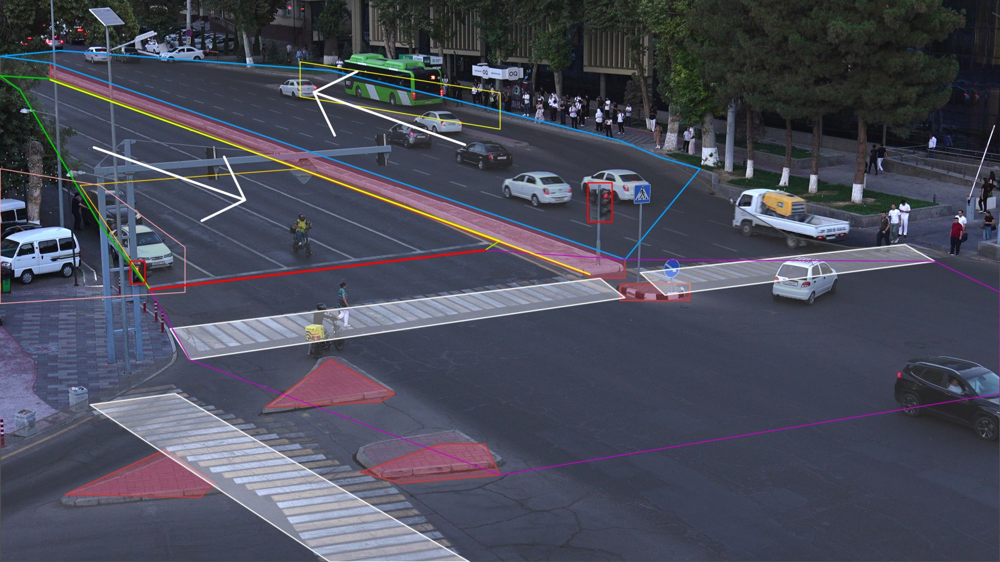

Every traffic event at one Tashkent junction, on a timeline.
A fixed 4K camera looks over a T-junction. Our system reports each violation or incident it sees as a time segment with one of 14 classes, and raises an accident-risk alarm using only the frames seen so far.

Live demo
Upload an .mp4 from this camera, up to 150 seconds and 600 MB. The demo runs the same code on a shared CPU at a lower frame rate, so a two-minute clip takes roughly ten minutes; a progress bar shows each stage. You get the events, an annotated playback with the timeline, the risk curve, and a JSON file.
Results on the sample videos
Each sample video annotated by our own renderer: boxes and track ids, the scene layout, active events in the corner and the timeline under the picture. Click a segment on the timeline to jump to it.
| Class | Start | End | Length |
|---|
Approach
A pretrained detector and a tracker turn the video into trajectories; everything after that is rules on those trajectories and the scene layout. We did not train a model: without labels for this camera, rules we can inspect beat a classifier we cannot validate.
Decode
PyAV skips the B-frames of the camera's IBBP stream: 10 frames per second of 4K at 1.4 times the speed of a full decode, on its own thread, downscaled to 1280×720.
Detect
YOLO26-S at 1280 px finds cars, buses, trucks, motorcycles, bicycles, pedestrians and animals.
Track
ByteTrack links boxes into trajectories. Riders and drivers are folded into their vehicle so they never count as pedestrians.
Normalise
The ground point is the bottom centre of a box; speeds are in box heights per second, which cancels most of the perspective of this elevated view.
Apply rules
One rule per class on trajectories and the scene layout. The inbound signal faces away from the camera, so red is read from a vehicle waiting at the stop line.
Shape segments
A strict condition must hold for a minimum time; the segment then spans the looser condition around it, merged per class, to match the annotation conventions at IoU 0.7.
Accident risk (Part B)
A separate, causal pass at 5 frames per second: ByteTrack online, then four cues fused into one probability. Footprints of road users on crossing paths that are about to overlap; hard braking with someone close ahead; wrong-way motion; and crossing the stop line while another vehicle waits. The score rises at once and decays with a two-second time constant.
What each class looks for
| Class | Rule |
|---|
Models and data
- YOLO26-S detector, COCO-pretrained, Ultralytics, AGPL-3.0; used as is.
- ByteTrack as shipped in Ultralytics 8.4.163.
- No external training data. The sample videos were used only for layout measurement, EDA and our own checks.
What the sample videos show
Where people and vehicles actually go, measured from our own tracks. The flow field is the evidence behind the one-way directions we hard-coded; the heatmaps show where pedestrians cross outside the zebras.
Report
What we built
A one-command submission: solution.py calls a small package that decodes the 4K stream cheaply,
detects and tracks road users with YOLO26-S and ByteTrack, and turns trajectories into events with one
precision-first rule per class on a hand-measured layout of this junction. A separate causal pass produces
the accident-risk curve. It runs offline, is deterministic (fixed seeds, fp32 on every device), and stays
inside the 3× real-time budget with the organizers' own 4K decode for Part B included.
What worked
- Skipping B-frames in the decoder. The camera's IBBP stream gives 10 frames per second of I and P frames at 1.4 times the speed of a full decode. Decoding, not the network, is the real cost of this task.
- Speeds in box heights per second. One threshold for "stationary" works near the camera and near the horizon without calibrating the camera.
- Reading the signal from behaviour. The inbound signal heads face away from the camera; a vehicle waiting at the stop line for two seconds is a reliable red.
- Predicted overlap of ground footprints for the risk score. Point-distance time-to-collision fired all the time on this oblique view, because cars in adjacent lanes look close; footprints on crossing paths do not.
- Segment shaping with a strict core and loose edges, which keeps boundaries close to the annotation conventions instead of the moment a threshold trips.
What did not
- We could not build a proper dev set. The organizers' Drive links hit Google's download quota on the day we worked, so our checks used a 12-second 4K excerpt of one sample and synthetic trajectories. Thresholds are hand-set, not tuned against labels.
- illegal_turn and fire_smoke are not predicted. Neither can be told reliably from this view, and a false prediction of a class that never occurs costs a whole class in the metric.
- Accident and near-miss rules have never seen a real positive from this camera; they are conservative by design and will miss low-speed contacts.
- People who cross a metre or two beside a zebra sit on the boundary between crossing and jaywalking; our margin is a judgement call.
What we would do next
- Label the full sample videos and tune every threshold against evaluate.py at IoU 0.7.
- Add background modelling for stopped vehicles and obstacles, as the AI City Challenge winners did.
- Verify rare-event candidates (accident, fire) with a small open vision-language model such as Qwen3-VL-2B, which fits the 5 GB weight limit and the T4 when called only a few times per video.
- A ground-plane homography from the zebra and lane markings, for metric speeds and time-to-collision.